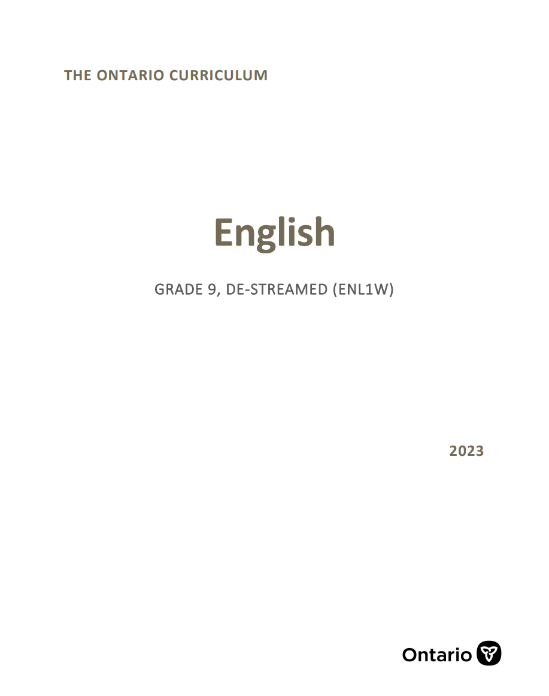
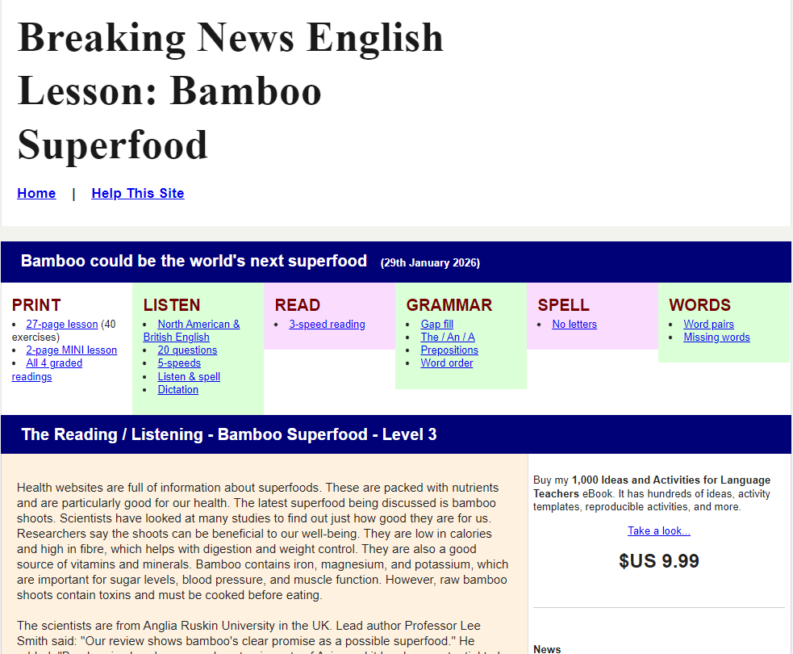

Breaking News English
Classroom Usage and Application
The tool I have chosen, Breaking News English will be of significant use to a grade 9 destreamed English classroom. This website is a continuously updating news centre that will provide English language lessons in the form of current global news condensed in two to three paragraphs. The same article is written in different levels which provide a progressive challenge for students of varying vocabulary and reading ability, from levels 1 to 6. News articles of harder difficulty will be labeled, and will only come with certain higher levels. However, each level of each news article will feature follow up questions that test a student’s reading comprehension and vocabulary through multiple choice and fill-in-the-blanks questions, while also having open-ended writing questions that test student critical thinking and expression of perspective through creative prompts. For example, open-ended writing questions for a news article discussing Hyundai’s planned acquisition of humanoid robot workers would include writing persuasive arguments for or against the trend of human labour being replaced by robots for factories and other forms of manual work. Students would be encouraged to write for both sides of the argument and imagine themselves in different positions (eg. a business owner, a factory worker). Through Bloom’s Taxonomy, this digital tool encourages the use of applying foundational reading and critical thinking skills to extend to real-world scenarios. The website allows for the practice of reading comprehension techniques and understanding of transferable skills to support communication in various cultural, social, and domain-specific contexts (A1.1) by placing the student in a scenario that makes them consider how the geographical, social, and political factors of the environment have led to the current event being reported. They will apply their reading and creative writing skills to imagine their place in the world and the social issues that currently and disproportionately affect humans of different positions. In combining reading comprehension with applications to world issues and perspectives, the tool honours A3.2 of the Ontario grade 9 curriculum as it demonstrates understanding of the historical contexts, contributions, lived experiences, and perspectives of a diversity of individuals and communities. Bloom’s Taxonomy is also advanced through analysis and evaluation by encouraging students to think about the validity of information, and use analysis techniques to understand bias in digital media by breaking down information into component parts and recognizing the importance of place, perspective, and sources of information. Through this tool, students can ultimately learn to recognize and evaluate the persuasive writing techniques and limitations of the digital news media that constantly surrounds them. This tool is thus significant to support reaching the learning of digital media literacy (A2), knowledge about texts (C1), comprehension strategies (C2), and critical thinking in literacy (C3).
Pedagogical Rationale and Curriculum Alignment
Establishing digital awareness and media literacy is an essential skill that should be taught as soon as students reach high school. Regardless of their English skill level, reading the news and current social trends have been useful in application of reading comprehension skills through connections to personal life and the environment. Elia Powers (2010) states that secondary school students must learn news literacy to understand bias and unreliability of reports dependent on specific perspectives (p.8). Powers states that while middle and high schoolers are among the most avid consumers of new digital media through social platform, they are inexperienced in identifying the attributes of unreliable information, a habit which would carry on to adulthood if not addressed (p.11). Powers supports the claim that by reading the news students learn critical comprehension skills in deconstructing and evaluating information presented to them based on the quality and reliability of the sources, recognize audience demographics and how it plays a role in the language and framing of a news story, and look for different viewpoints when necessary (p.8). These skills correlate with the expectations of the Ontario curriculum, particularly C3.3 which expects students to analyze a variety of informational texts by assessing the credibility, reliability, and significance of information and formulating conclusions. Similarly, A2.3 expects students to conduct research based on factors of credibility, perspectives, and a focus on misinformation; while A2.5 expects students to demonstrate an understanding of the interrelationships between the form of the texts and the intended audience. Additionally, Salih et al. (2024) reports the strong relation in reading newspapers and current events to improved vocabulary, enhanced English writing skills, and better articulation of ideas through English communication (p.137). Salih et al. further reports that reading news builds upon active learning as they synthesize the text they read to connections in real world events (p.144). This report reflects the value of constructivism in learning and how news-based literary websites like my digital tool can incorporate it as students are encouraged to connect the information they read from the article to their foundations of knowledge based upon their lived experiences, such as how they have been influenced or interacted with these social issues and how their worldview is shaped from a unique background. Through constructivism in news articles, my digital tool supports learning objective C2.1 as I would frame comprehension and critical thinking questions by asking students to identify and explain prior knowledge from various sources, including their personal experience and learning in other subject areas.
Application in Different Teaching Contexts
There are a variety of news articles covering different topics on this website, showcasing crossdisciplinary value. For instance, biology and psychology classes may find value in the articles discussing scientific breakthroughs in animal behaviour and the parallels to adolescent mental development, as well as articles discussing the impact of climate change. Many of the articles touch upon social sciences such as economic reports, news regarding major political events and policy changes, reports on mental and physical health issues, and new discoveries in archaeology and history. By allowing students to choose their own articles of a specific reading level based on their separate interests, this website is effective in utilizing UDL principles as students have the opportunity to improve their reading and research skills based on their own passions, strengths, and prior knowledge. As the website provides additional sources on the topic for further reading, research assignments that use the website as a starting point to find a topic for a longer report would adhere to A2.3 on conducting responsible and reliable research and A2.4 to consider and evaluate the impact of conventions and forms in digital media on the audience when analyzing text.
References
Powers, Elia, "Teaching News Literacy in the Age Of New Media: Why Secondary School Students Should Be Taught to Judge the Credibility of the News They Consume" (2010). All Theses and Dissertations (E TDs) . 455. https://openscholarship.wustl.edu/etd/455
Salih, Fathima & Sujani, Mjf & Rishad, Mohamed. (2024). Impact of Reading Newspaper on the Development of Second Language Learners’ writing Skills. Elementaria: Journal of Educational Research. 2. 136-158. 10.61166/elm.v2i2.71.